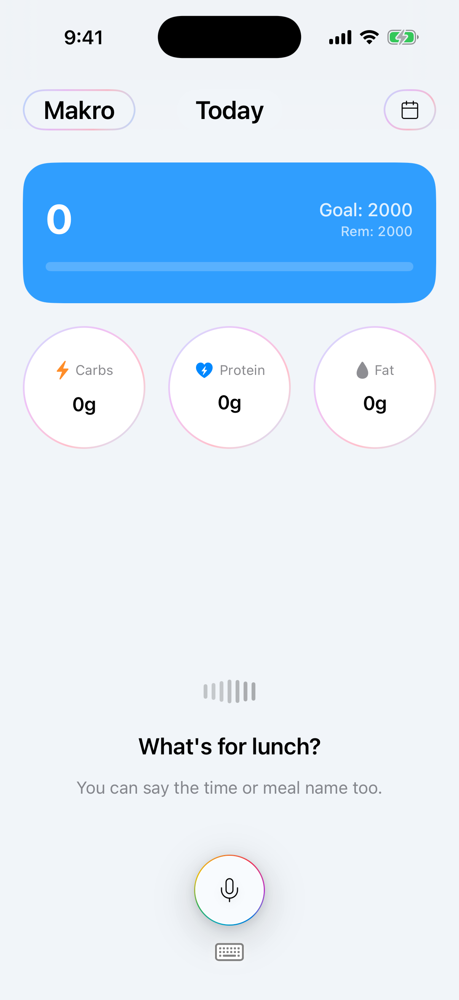
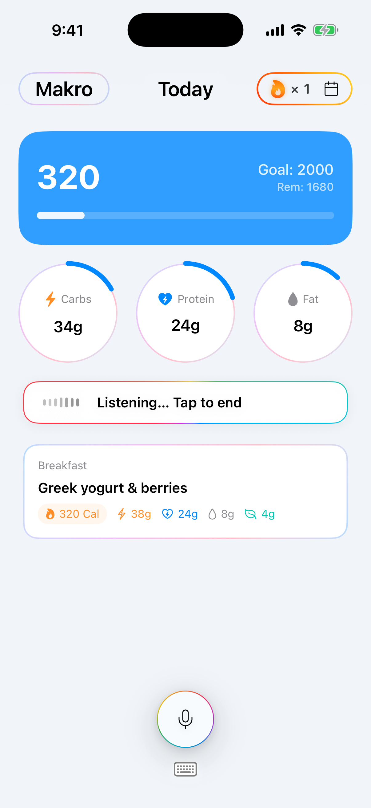
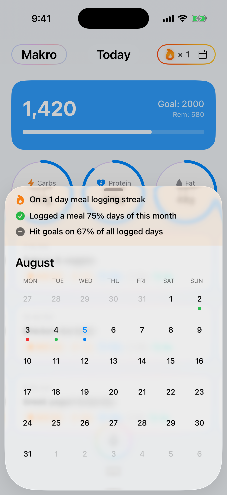

Tap the mic and describe what you ate, including the time or the meal name. Typing works the same way.
digdig / GetMakro
A digdig micro app
Tracking regularly beats tracking perfectly.
The easiest way to log your food and stay on track. The app on your iPhone is named Makro.
Voice or keyboard
Calories, macros, and fiber
Sync to Apple Health

How it works
Logging a meal should take a few seconds. The log happens, so the day is still there tomorrow.
Calories, carbs, protein, fat, and fiber are estimated from what you described. Close enough to keep going.
Meals add up against the calorie goal you set, with the macro split beside it.

Just say what you ate.
No searching a food database. Tap the mic, describe the meal, and mention breakfast, lunch, or a time if you want it placed there. Siri can log a meal the same way.

Close enough to keep going.
GetMakro turns what you said into estimated calories and macros, using typical values from USDA FoodData Central. A different portion, recipe, or package label can change the real number. The point is the meal gets logged.

The month is the real score.
A streak and a calendar show whether you kept tracking. Keeping it up over time matters more than any single day’s calorie count. If you allow it, logged calories, protein, carbs, and fat can also be written to Apple Health.